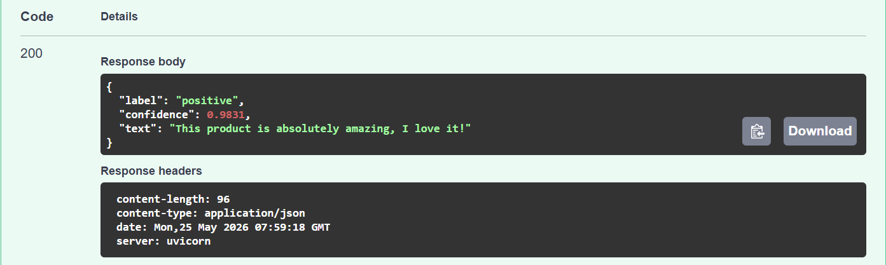
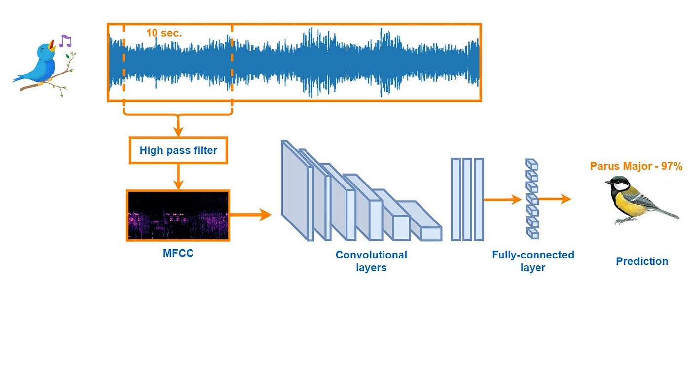
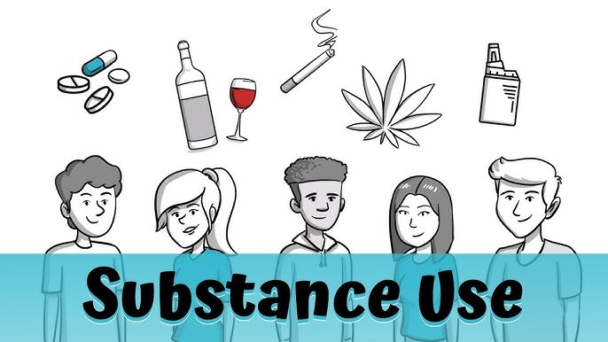

Sentiment Classifier
DistilBERT fine-tuned on Amazon reviews to classify product sentiment as positive or negative, reaching high accuracy on held-out review data.

Retail Price Forecasting — Walmart vs Kroger
End-to-end pipeline scraping daily grocery prices across Washington State, forecasting 14-day trends with Facebook Prophet, and visualizing competitor gaps on a live Streamlit dashboard — all powered by AWS.

HN Semantic Search Engine
Search 1,400+ Hacker News stories using natural language, powered by AWS Bedrock Titan Embeddings and pgvector similarity search on RDS PostgreSQL.
Marketing Effectiveness for Subway Foot Traffic (NYC)
Investigated how different marketing channels impact subway store visit trends in NYC using XGBoost Regressor and SHAP for data-driven advertising insights.

AI-Powered Data Quality Monitor
Automatically detects missing values, duplicates, and outliers in datasets, explains issues in plain English, and recommends fixes — built on AWS Lambda, the Claude API, and Streamlit.

Bird Species Classification (CNN)
A CNN trained on spectrograms from bird call recordings to classify species around Seattle — binary and 12-class multi-class classification, sourced from Xeno-canto.

Health Behavior & Diabetes Prediction (SVM)
Explored health behaviors and demographic factors driving diabetes risk using NHIS data, comparing Linear, Polynomial, and RBF kernel SVMs.

Youth Substance Use Prediction
Explores and predicts patterns of youth marijuana and alcohol use through binary classification, multi-class classification, and regression modeling with scikit-learn.
Flood Vulnerability in Asian Countries
Predicts flood disaster frequency using ML regressors, forecasts trends with SARIMA (Seasonal ARIMA), and analyzes key disaster-related indicators across Asia.